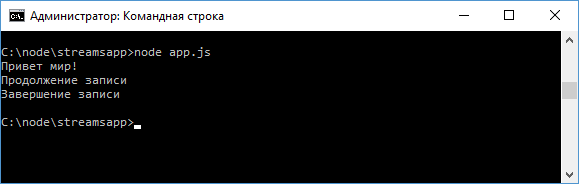

Stream
Stream представляет поток данных. Потоки бывают различных типов, среди которых можно выделить потоки для чтения и потоки для записи. При создании сервера в первой главе мы уже сталкивались с потоками:
const
http = require("http");
http.createServer(function(request, response){
}).listen(3000);
Параметры request и response, которые передаются в функцию и с помощью которых мы можем получать данные о запросе и управлять ответом, как раз представляют собой потоки: request - поток для чтения, а response - поток для записи. Используя потоки чтения и записи, мы можем считывать и записывать информацию в файл. Например:
const
fs = require("fs");
let writeableStream = fs.createWriteStream("hello.txt");
writeableStream.write("Привет мир!");
writeableStream.write("Продолжение
записи \n");
writeableStream.end("Завершение записи");
let
readableStream = fs.createReadStream("hello.txt", "utf8");
readableStream.on("data", function(chunk){
console.log(chunk);
});
Для создания потока для записи применяется метод
fs.createWriteStream(), в который передается название файла. Если вдруг в папке
нет такого файла, то он создается.
Запись данных производится с помощью
метода write(), в который передаются данные. Для окончания записи вызывается
метод end().
После этого в папке проекта появляется файл hello.txt, который
можно открыть в любом текстовом редакторе.
Для создания потока для чтения
используется метод fs.createReadStream(), в который также передается название
файла. В качестве опционального параметра здесь передается кодировка, что
позволит сразу при чтении кодировать считанные данные в строку в указанной
кодировке.
Сам поток разбивается на ряд кусков или чанков (chunk). И при
считывании каждого такого куска, возникает событие data. С помощью метода on()
мы можем подписаться на это событие и вывести каждый кусок данных на консоль:
readableStream.on("data",
function(chunk){
console.log(chunk);
});
Запустим файл на выполнение:

Только работой с файлами функциональность потоков не ограничивается, также имеются сетевые потоки, потоки шифрования, архивации и т.д., но общие принципы работы с ними будут те же, что и у файловых потоков.